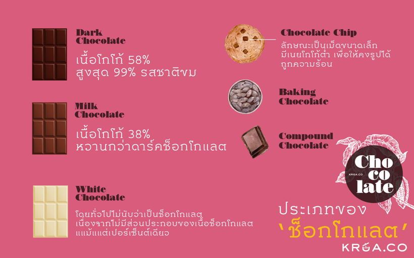

Drink
ประเภทของช็อกโกแลต
ประเภทของช็อกโกแลตที่มีขายอยู่ตามท้องตลาดมีความหลากหลายมากมาย ไม่ว่าจะเป็นดาร์กช็อกโกแลต มิลค์ช็อกโกแลต ไวท์ช็อกโกแลต ซึ่งช็อกโกแลตทั้ง 3 ประเภทนี้คือช็อกโกแลตแท้หรือที่เรียกว่าช็อกโกแลตกูแวร์ตูร์ และก็ยังมีช็อกโกแลตชิพ คอมพาวด์ช็อกโกแลต ช็อกโกแลตเหล่านี้ล้วนมีหน้าที่และรสชาติที่แตกต่างกันออกไป

1. Dark chocolate มีเนื้อโกโก้ 58% ขึ้นไป สูงสุด 99% รสชาติความขมของช็อกโกแลตจึงขึ้นอยู่กับปริมาณเนื้อโกโก้ที่ผสมอยู่ในนั้น ยิ่งเปอร์เซ็นต์เนื้อโกโก้มากเท่าไร ความขมก็ยิ่งมากขึ้นเท่านั้น การนำดาร์กช็อกโกแลตมาทำขนม สิ่งที่ควรคำนึงคือเปอร์เซ็นต์ความขมของดาร์กช็อกโกแลต ว่าเหมาะกับการนำมาทำขนมประเภทไหน
2. Milk chocolate มีเนื้อโกโก้ 38% จึงมีรสหวานกว่าดาร์กช็อกโกแลต คนส่วนมากนิยมกิน นำมากินเล่นมากกว่าจะนำมาทำเป็นขนม เพราะความที่มีเปอร์เซ็นต์น้ำตาลมากกว่าเนื้อโกโก้จึงทำให้กินง่ายกว่าดาร์กช็อกโกแลต
3. White chocolate โดยทั่วไปไม่นับว่าเป็นช็อกโกแลต เนื่องจากไม่มีส่วนประกอบของเนื้อโกโก้แม้แต่เปอร์เซ็นต์เดียว มีเพียงแค่เนยโกโก้ น้ำตาล และนมผงเป็นส่วนประกอบ รสชาติที่ได้จึงไม่มีความขมของเนื้อโกโก้ มีเพียงความหวาน เนื้อที่ขาว และกลิ่นที่หอมเหมือนวานิลลา และที่สำคัญ ไวท์ช็อกโกแลตละลายง่าย แต่ก็ไหม้ง่ายเช่นกัน เพราะมีน้ำตาลอยู่เป็นจำนวนมาก การนำไวท์ช็อกโกแลตมาทำขนมจึงต้องระวังข้อนี้เป็นอย่างมาก
4. Chocolate chip ช็อกโกแลตอีกรูปแบบหนึ่ง ลักษณะเป็นเม็ดขนาดเล็ก มีเนยโกโก้ต่ำ เพื่อให้คงรูปได้เมื่อถูกความร้อน จึงมักเห็นช็อกโกแลตชิพอยู่ในเนื้อคุกกี้หรือเค้กเพื่อเพิ่มเนื้อสัมผัส เช่นเดียวกัน ช็อกโกแลตชิพบางยี่ห้อก็มีราคาถูก เพราะใช้ไขมันพืชแทนเนยโกโก้
5. Baking chocolate ที่เรียกแบบนี้เพราะต้องการให้ผู้บริโภคเข้าใจตรงกันว่า เหมาะกับการนำมาอบ ด้วยเหตุผลที่ว่าในช็อกโกแลตเหล่านี้มีน้ำตาลน้อย หรือไม่ก็มีไขมันพืชผสมอยู่ จึงไม่จำเป็นต้องนำมา temper ให้เซตตัวเหมือนกับ 3 ชนิดแรกด้านบนที่เป็นช็อกโกแลตแท้ (ช็อกโกแลตกูแวร์ตูร์) ซึ่งมีไขมันจากเนยโกโก้อย่างเดียว ช็อกโกแลตประเภทนี้มีหน้าตาหลายแบบทั้งแบบบาร์และชิพ (บ้านเรามักพบแบบชิพมากกว่า) รสชาติคล้ายดาร์กช็อกโกแลต baking chocolate จึงแยกประเภทตามระดับน้ำตาล ดังนี้
Unsweetened chocolate เป็นช็อกโกแลตที่ไม่มีน้ำตาล มีเนื้อโกโก้ 99% จึงมีรสค่อนข้างขม
Bittersweet chocolate มีน้ำตาลน้อย มีเนื้อโกโก้มากกว่า
Semisweet Semisweet chocolate มีรสหวานที่สุดในบรรดา baking chocolate
6. Compound chocolate บางยี่ห้อเรียกว่า chocolate coating เพราะมีส่วนผสมของไขมันพืชแทนเนยโกโก้ จัดเป็นช็อกโกแลตหาซื้อง่าย ราคาถูก แต่รสชาติไม่อร่อยเท่าช็อกโกแลตกูแวร์ตูร์ จึงไม่นิยมนำมาผสมลงในเนื้อขนม แต่นิยมนำมาตกแต่งหรือเคลือบขนมมากกว่า